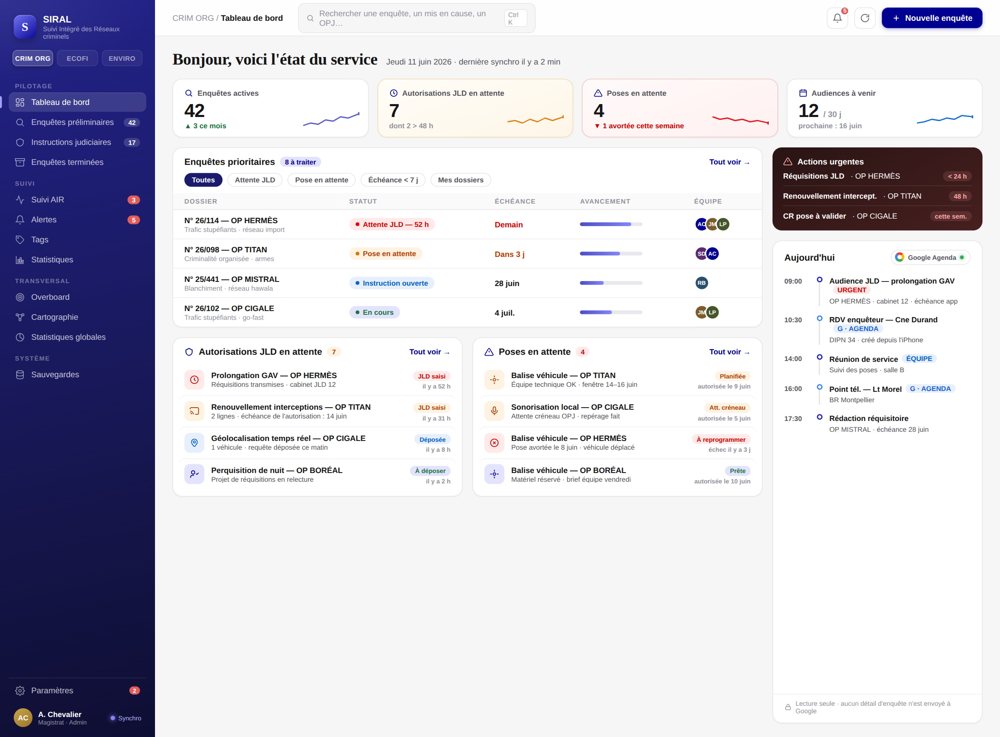

Même direction que la maquette retenue — clarté, typographie d’institution, fluidité maximale — mais la palette verte cède la place au Bleu France du système de design de l’État (DSFR), celui du ministère de la Justice. Le rouge Marianne est réservé à l’urgence, le vert aux statuts validés : chaque couleur retrouve un sens.
Titres en serif d’apparat (Fraunces), corps en Inter. La police officielle Marianne étant réservée à l’État, on bascule dessus le jour d’un éventuel rattachement ministériel — un seul fichier à changer.
Transitions 150 ms, aucun rechargement de page (PWA), palette de commande Ctrl+K pour tout atteindre au clavier, données locales d’abord (IndexedDB) : l’interface répond instantanément, même hors-ligne.
Fonds #F6F6F6 jamais blanc pur, ombres légères, coins arrondis 14–16 px, densité maîtrisée. Le mode « Nuit d’audience » reste au programme pour les permanences, décliné dans la même palette.
Bleu : action et navigation. Rouge Marianne : urgence réelle seulement — il garde son pouvoir d’alerte. Vert : validé. Ambre : en attente. Fini la couleur décorative.
